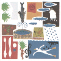
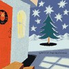
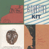

strange music page
japanese strange music * * * gontiti
|
|
#GONTITI
この名前を知らなくても絶対に音だけは聴いた事はあるはず、テレビやラジオのBGMとして。
私はそれほど熱心なファンって訳でもないので、詳しい情報は
公式ホームページ
で入手していただければイイと思います。
初期2枚、板倉文さんのプロデュースです。KILLING TIMEとも重なる部分のある実験イージーリスニング。
熱心に聞いてたのは中学-高校くらいだったと思います、KILLING TIMEにハマルきっかけにもなったんですけど。
|
#えーと1stと2ndのカップリング。プロデュースはKILLING TIMEの板倉文さんです。この頃はまだまだ色々実験してみてた時期みたいです、サンプラーの妙な使い方とか面白いです。
特に「脇役であるとも知らずに」ではほとんどGONTITI+KILLING TIMEみたいな感じ。

- Nickel Dance
- Canal True
- 水影
- 帰ってきた息子
- マルセルでさえも
- トルコ行進曲
- 眠りの島
- 緑の性格
- リスキチトジャタロ
- 支那子
- Jado
- Drop D
- Twilight Walk
- Valse
- マンジャノーレ
- 修学旅行夜行列車南国音楽
- 双眼鏡と私
- F人
- 闇のシダール
- アスピリン&アレルギー
- 脇役であるとも知らずに
- GONZALEZ三上 (nylon strings guitar)
- TITI村松 (steel strings guitar)
- 板倉文 (keyboards,electric guitars)
- 松浦雅也 (keyboards,computer,programming)
on "Another Mood"
- 東祥高 (programming on 1-10.)
- 田中宏明 (percussios on 1-10.)
on "脇役であるとも知らずに"
- BANANA (keyboards)
- 清水一登 (xylophone,clarinet,bass clarinet)
- MECKEN (bass)
- Ma*To (tabla)
- PECKER (percussions)
- 斎藤ネコ (violin)
- 栄田嘉彦 (violin)
- 山田雄司 (viola)
- 溝口肇 (cello)
EPIC/SONY RECORDS: ESCB-1058 (original release 1983,1984)
- U.T. (Greenwich Time)
- ガロア
- General Trend
- Clockwork Waltz
- チョコレート粉砕工場
- 夢の比重
- マダムQと食卓
- 雨上がりの王国
- ドイツ銀行
- Modern et la
- このうえない困りもの
- Birth of Sigh
dircted by 福岡知彦
produced by GONZALEZ三上,TITI村松
arranged by 松浦雅也
arranged by
板倉文
- GONZALEZ三上 (guitars)
- TITI村松 (guitars)
- 松浦雅也 (fairlight CMI programming,keyboards)
- BANANA (keyboards)
- 清水一登 (keyboards,clarinet)
- 溝口肇 (cello)
- 斎藤ネコ (violin)
- 栄田嘉彦 (violin)
- 山田雄司 (viola)
- 渡辺等 (bass)
EPIC/SONY RECORDS: RSCB-1059 (1985.5.22)
#よく行く近所の中古屋さんの3枚900円コーナー。ゴンチチの初期のCDってどーやら廃盤らしく、最近あまり見かけなくなってますね、しかもこいつは輸入盤です。
初期の3,4枚なんて結構面白いと思うんですけどね、BGMっぽくはあるんですけど、それだけじゃ無いです。アコギを持ったオッサン二人で、こんな涼しげな音が出てくるんですから、やっぱし。
板倉さんのアレンジの曲はストリングスがとても綺麗ですね、あと清水一登さんのムチャなアレンジも楽しです...っていうか6曲目、ほとんどザッパ。(2000.2.2)

- Coconut Basket
- 南方郵便船
- Noon Flight
- Yellow Tornado
- モナパーク
- ナナキ
- マイル君とパプ谷のクリマロ君
- NDD/Night Dizzy Dance
- 携帯用ワルツ
- ガラスの魚
- Mr.F says
- nymph
produced by GONTITI
arranged by
GONTITI (2.3.4.7.11.)
松浦雅也 (1.5.)
板倉文 (6.)
清水一登 (8.9.)
溝口肇 (10.12.)
Directed by 福岡知彦
- ゴンザレス三上 (nylon strings guitar)
- チチ村上 (steel strings guitar)
- 松浦雅也 (fairlight,CMI,synthesizers)
- BANANA (synthesizers)
- 清水一登 (xylophone,clarinet,piano)
- 溝口肇 (cello,computer)
- 斎藤ネコ (violin)
- 栄田嘉彦 (violin)
- 山田裕司 (viola)
- 藤井裕 (bass)
- 渡辺等 (bass)
- PECKER (percussions)
- 帆足哲昭 (percussions)
- 松田幸一 (mouth harp)
- 種とも子 (chorus)
- Take Shingo (synclavier programming)
CBS/SONY - PORTRAIT: RK-44438 (original release 1986)

- 原始の黄昏
- WINTER FALL
- 12月の水泳訓練
- ANOTHER MOOD
- 種明かし
- STRIKE COMMITTEE
- PASSING RAIN
- RESTLESS ELEVATOR
- 幸せな日々
- 記号の丘
- Ｓからの小包
- MARRON UNDER THE MOON
- GONZALEZ三上 (guitars)
- TITI松村 (guitars)
- 松浦雅也 (computer)
- 清水一登 (keyboards,clarinet)
- 松田幸一 (mouth harp)
- Miura Toyoshi (tenor sax)
EPIC/SONY RECORDS:
#これも結構好きです。たぶんTVで初めて名前を見かけたのがこの頃じゃなかったかと思います(あんまり昔だからよく覚えてないけど)
1曲目の溝口肇さんアレンジの瑞々しい感じとか、7曲目とかの軽快なリズムとか。なんかほんとに聴いててただ気分の良くなる音。きっとそんな訳でTV番組のBGMに死ぬほど使われてるんでしょうけど。

- 貧しい王様
- 大陸風に向かって
- Foolish Parade
- バスで見た女
- Little toy
- 僕の誤解
- Watchdog in the afternoon
- Blue Flame
- もう少しここで
- mica
produced by GONTITI
directed by 福岡知彦
arranged by
溝口肇 (1.)
松浦雅也 (2.5.)
清水一登 (4.7.)
福井峻 (6.8.)
GONTITI (3.9.10.)
- GONZALEZ三上 (guitars)
- TITI松村 (guitars)
- 松浦雅也 (computer)
- 清水一登 (keyboards,percussion,ocarina)
- 溝口肇 (keyboards,balaphone)
- Ma*To (computer)
- 仙波清彦 (percussions)
- 青山純 (drums)
- 板倉文 (bass)
- 渡辺等 (bass)
- 島田和夫 (drums)
- JOE STRINGS (strings)
- 前田Strings (strings)
- 太田裕美 (vocals)
EPIC/SONY RECORDS: 32 8H-128 (1987)
#4,7,8,9曲目。清水一登編曲。

- アンダーソンの庭
- Homemade Grief
- Abel
- Strange Socks
- Acoustic eel
- Bandit in the midnight
- クルトが町を行く
- 汗の国
- 蒸気の羽根
- Ferris Wheel
- 眠そうな子供達
- 休暇届
- GONZALEZ三上 (nylon strings guitars)
- TITI松村 (steel strings guitars)
- 松浦雅也 (computer on 1.2.11.)
- 清水一登 (piano,keyboards on 1.3.4.7.8.9.)
- 岸本一遥 (violin on 2.11.)
- 溝口肇 (synthesizers on 3.)
- Ma*To (programming on 3.6.8.)
- 渡辺等 (bass on 3.)
- 金子飛鳥グループ (strings on 3.)
- WHACHO (percussions on 4.7.)
- 遠山淳 (synthesizer programming on 4.6.8.9.)
- 高橋章 (synthesizer programming on 4.6.8.9.)
- 近藤達郎 (synthesizers on 6.)
- 矢壁篤信 (drums on 7.)
- 岡野ハジメ (bass on 7.)
- 小玉和文 (trumpet on 7.)
- 増井朗人 (trombone on 7.)
- 藤井裕 (bass on 9.)
- PECKER (percussions on 9.)
EPIC/SONY RECORDS: ESCB-1063 (1988)
#近所の中古屋さん、\880。
これでもかとばかりにテレビとかラジオでBGMにされてますけど、繰り返し使いたくなるのも良くわかるような気もします。瑞々しい音。
最近のは手馴れすぎちゃって、全然聴いてないんですけど。この頃までの実験音楽イージーリスニングみたいな.....音は今聴いてもやっぱり好きです。(2000.10.16)

- Sleigh Ride
- Tiny Lips [Christmas Version]
- White Christmas
- マイル君とパブ谷のクリマロ君
- 種明かし
- 修学旅行夜行列車南国音楽
- Green Christmas
- Gonzalez三上 (nylon strings guitar)
- Titi松村 (steel strings guitar)
- 近藤達郎 (piano,celesta,glockenspiel,synthesizer)
- 清水一登 (vibrphone,marimba,clarinet)
- 渡辺等 (upright bass,mandolin)
- 越智義明 (percussions)
- 越智義久 (percussions)
- れいち (drums on 1.)
- 金子飛鳥 (violin)
- 栄田嘉彦 (violin on 1.7.)
EPIC/SONY RECORDS: ESCB-1107 (1990.12.1)
#弟からの借り物、ちょっとこの頃になると(クオリティは高いんだけど)毒気が抜けきっちゃってあんまり面白くないかも。

- QED
- 水の誘惑
- Cool Comedy
- Elephant Swing
- Hermaphroditos
- Rush Order
- 君の自転車
- My Jellyfish
- Buon Giorno
- Loose Trek
- いちばん大事なもの
- ゴンザレス三上 (nylon strings guitar)
- チチ松村 (steel strings guitar)
- 渡辺等 (bass on 1.)
- 清水一登 (piano on 1.)(vibraphone,keyboards on 8.)(clarinet on 10.)
- 金子飛鳥 (violin on 7.)
- Ma*To (programming on 5.8.9.10.)
- カケハシイクオ (percussions on 1.6.7.9.10.)
- 近藤達郎 (keyboards on 10.)(celesta on 11.)
- 松浦雅也 (keyboards,programming on 2.3.4.)
- 越智義郎 (percussions on 1.7.)
- 越智義久 (percussions on 1.7.)
- Takahashi Akira (programming on 5.6.9.10.)
EPIC/SONY RECORDS: ESCB-1157 (1991.6.21)
- I'm U
- 漁夫の利
- Girls love Thrills
- Reveries
- a tempo
- 窓辺の三月
- Nadie
- NPC
- Something's all right
- Bio Baiao
- Tea and Cake
- ああなんてやわらかいんだろう
- a tempo (swing version)
- Gonzalez三上 (guitars)
- Titi松村 (guitars)
- 松浦雅也 (programming,keyboards on 1.2.5.13.)
- 前田康美 (voice on 1.)
- Ma*To (programming on 3.4.6.10.11.)
- 高橋章 (programming on 3.4.10.11.12.)
- 清水一登 (piano on 1.7.11.)(hammond organ on 9.)(keyboards on 10.)
- 金子飛鳥strings (strings on 4.11.)
- 村田陽一 (trombone on 4.8.11.)
- 平内保夫 (trombone on 4.8.11.)
- 清岡太郎 (trombone on 4.8.11.)
- 赤木りえ (flute on 4.11.)
- 高桑英世 (flute on 4.11.)
- 藤田乙比古 (French horn on 4.11.)
- 阿部雅人 (French horn on 4.11.)
- 佐藤潔 (tuba on 4.)
- 清水靖晃 (tenor sax on 8.)
- 渡辺等 (contrabass on 8.)
- 越智義朗 (percussions on 8.)
- 越智義久 (percussions on 8.)
- 上里稔 (bariton sax on 8.)
- 金城寛文 (tenor sax on 8.)
- 高野正幹 (tenor sax on 8.)
- 吉永寿 (alto sax on 8.)
- 平原まこと (alto sax on 8.)(bass clarinet on 8.11.)
- 菅坂雅彦 (trumpet on 8.)
- 林研一郎 (trumpet on 8.)
- 白山文男 (trumpet on 8.)
- 横山均 (trumpet on 8.)
- 宮本直樹 (trombone on 8.)
- 十亀正司 (clarinet on 8.)
- 澤村康恵 (clarinet on 8.)
- 西沢幸彦 (flute on 8.)
- 相馬充 (flute on 8.)
- 南浩之 (French horn on 8.)
- 丸山勉 (French horn on 8.)
- 土居"ロドリゲス"正和 (drums on 9.)
- シャブド多田 (bass on 9.)
- 近藤達郎 (keyboards on 12.)
EPIC/SONY RECORDS: ESCB-1309 (1992)
- 10 years after
- Leave from the airport
- Dirac in zoo
- My favourite things
- はじめてのシャンプー
- 黒い蟻の生活
- Cactus Road
- 口笛ふいて
- Lonesome Dulcimer
- Coati's Nap
- History of Island
- 北海道は、どこにある？ここにある！-N.Y.Mix-
- ゴンザレス三上 (guitars)
- チチ松村 (guitars)
- 羽毛田丈史 (synthesizers,programming)
- エリック宮城 (trumpet on 1.)
- 村田陽一 (trombone on 1.)
- 浜口茂外也 (percussions on 3.)
- 渡辺等 (contrabass on 4.)
- 俤郁夫 (percussions on 4.12.)
- 越智義朗 (perucssions on 4.)
- 越智義久 (perucssions on 4.)
- 清水一登 (marimba on 4.)(percussions on 6.)
- ササラユキエ (vocals on 4.)
- 石橋雅一 (oboe on 4.)
- 小林靖宏 (accordion on 6.)
- 平原まこと (bass clarinet on 6.8.)
- 太田裕美 (vocals on 8.)
- 淵野繁雄 (alto sax on 8.)
- 沢田一範 (alto sax on 8.)
- KIKI (voice on 8.)
- 清水靖晃 (tenor sax on 10.)
- 叶眞司 (programming on 10.)
- 甲藤さち (flute on 11.)
- 十亀正司 (clarinet on 11.)
- 寺本りえ子 (vocals on 12.)
- 海沼正利 (percussions on 12.)
EPIC/SONY RECORDS:
- 瓶 (come una bottiglia)
- telegraph of love
- monopolistic enterprise
- Micowae Rhapsody
- Mr.Pony Poin
- Blue of Green
- Geese Honking, Flogs Hopping
- In The Scoolyard
- Middle-aged Angel
- My Fat White Cat
- 9 o'clock Shadow
- My Poiny Poin 4 Cabby Beatuites
- ゴンザレス三上 (guitars,vocals)
- Ma*To (programming)
- Silent Poets (programming)
- 屋敷豪太 (programming,keyboards,bass,drums)
- Max Hochard (programming,keyboards)
- 楠均 (drums,percussions)
- チチ松村 (gutiars)
- キオト (bass,alto sax)
- 北原雅彦 (trumpet)
- Haruno Takahiro (sax)
- かの香織 (vocals)
- 小川美潮 (vocals)
- 甲田益也子 (vocals)
- 遊佐未森 (vocals)
EPIC/SONY RECORDS: ESCB-1445 (1995)
#ゴンチチとクレモンティーヌのCD、ミニアルバム。予想通り結構お手軽な出来です。和やかですね、ジャケのお魚はカワイイかも。まぁ、そんな所です。
- Poisson Lune
- Poisson Lune Mediterranean Mix
- Poisson Lune Atlantic Mix
- Poisson Lune Instrumental
- L'ete
- Clementine
- ゴンザレス三上
- チチ松村
- Haketa Takefumi (programming,keyboards)
- 渡辺等 (bass)
- Hirahata Makoto (clarinet,bass clarinet)
- カケハシイクオ (percussions)
SONY MUSIC ENTERTAINMENT: SRCS-8465 (1997.10.22)